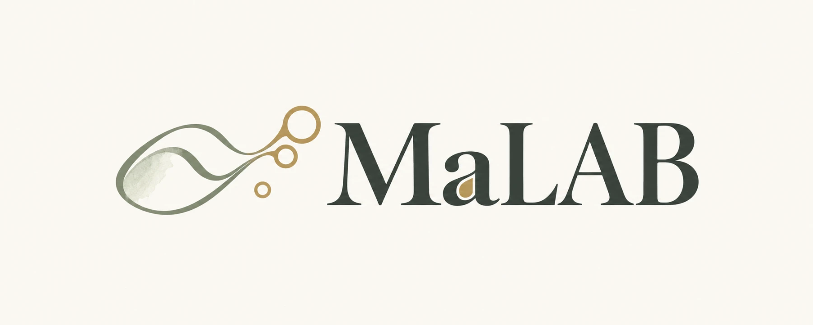
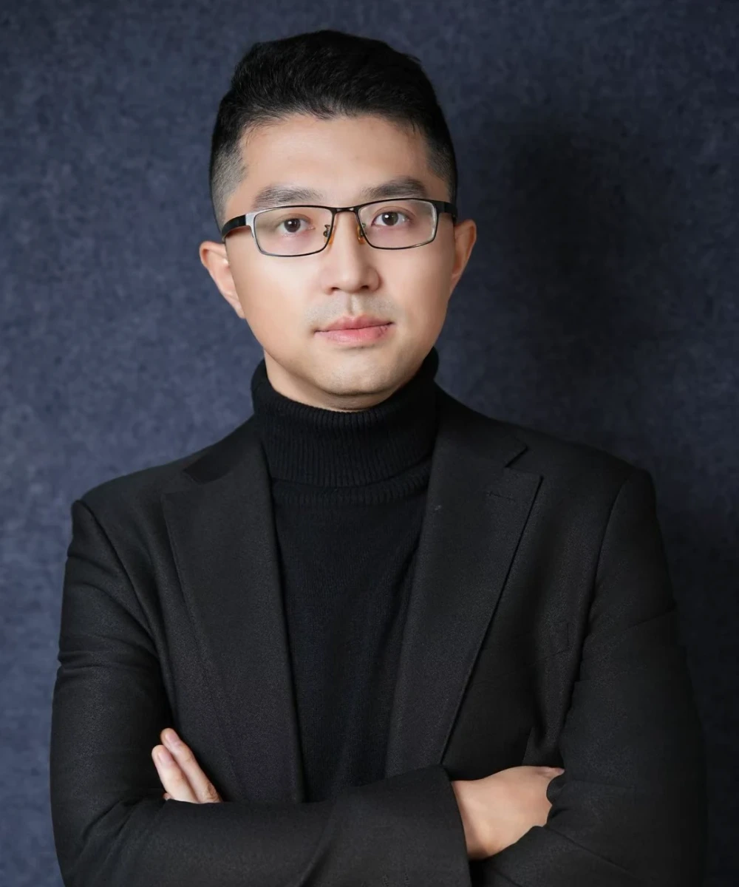
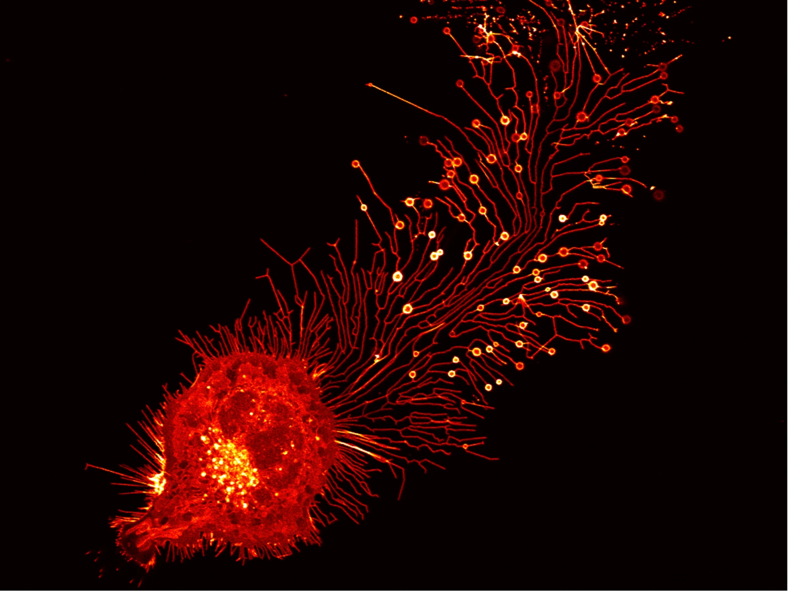
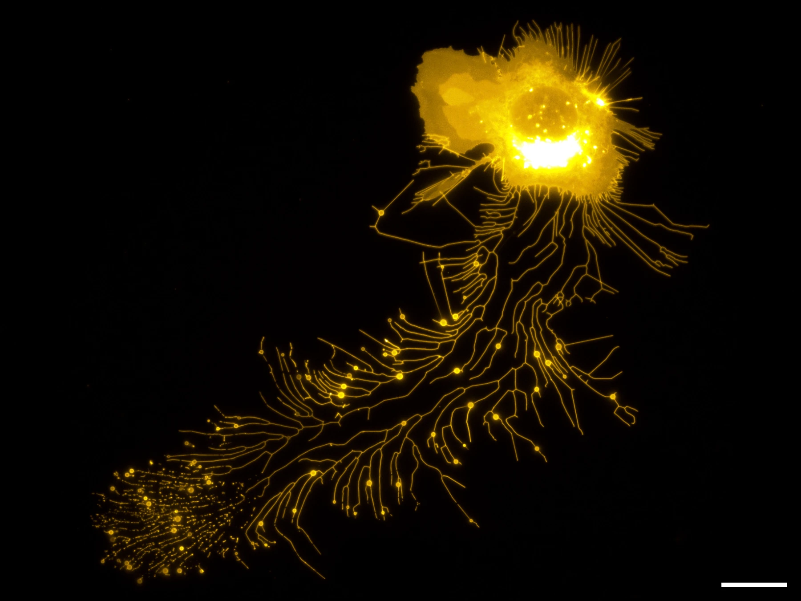
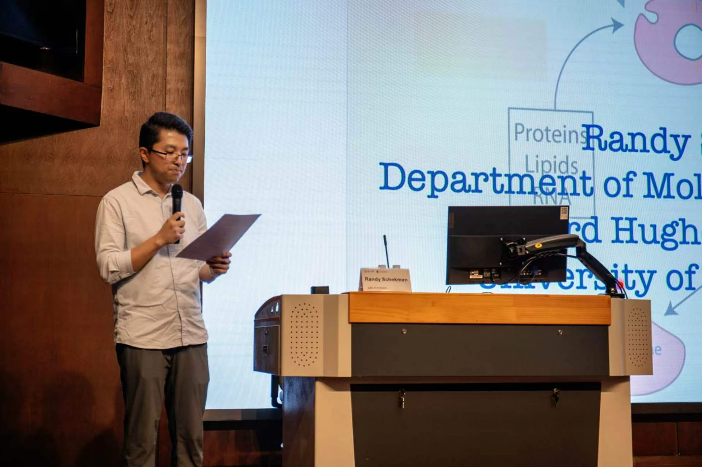

膜与囊泡
Membranes & Vesicles研究迁移体和外泌体的形成机制，探索膜结构如何组织成具有特定功能的细胞外囊泡。

LIANG MA LAB马 亮 实 验 室
浙江大学 · ZJEA CURIOSITY FOR CONNECTION
研究员 / 长聘轨助理教授 · 博士生导师
马亮博士任职于浙江大学爱丁堡大学联合学院。研究聚焦迁移体和外泌体：它们如何形成，如何选择与运输货物，以及如何参与生理和病理过程。
从膜结构到细胞间交流，我们希望理解细胞如何借助微小的囊泡，与周围的世界建立联结。
浙大个人主页 ↗研究迁移体和外泌体的形成机制，探索膜结构如何组织成具有特定功能的细胞外囊泡。
解析迁移体和外泌体货物分选的分子调控机制，理解细胞如何选择、包装与传递物质。
探索迁移体和外泌体在生理与病理过程中的作用，理解细胞之间的信息交流。



实验室动态将在这里更新。